Page 1 / 原始页码 299
第 16 章 基因表达的调控
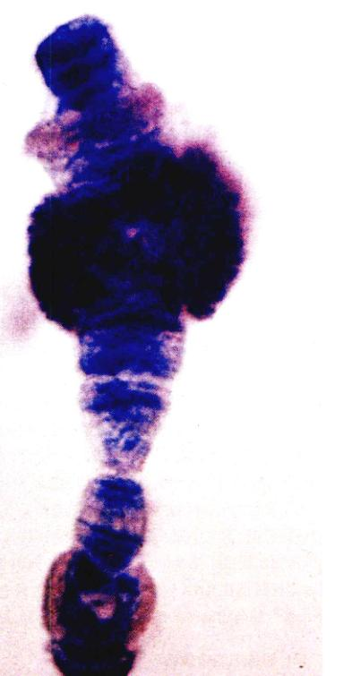
图 16.1 染色体胀泡 在果蝇 (Drosophila melanogaster) 的这条染色体中，能够看到每个独立的活性基因都是染色体上的一个“胀泡”。从 DNA 模板转录来的 RNA 经过放射性标记，图中的暗斑显示了它在染色体上的位置。
在一个交响乐队中，所有的乐器并不是同时演奏的；如果是那样的话，产生的就会是噪音了。而乐谱就决定了乐队中的各种乐器分别在什么时候演奏。与此相似的是，生物体中的基因也不是都在同一时间全部表达，每个基因都全力以赴地生产它所编码的蛋白质。按照 DNA 调节区的基因图谱所确定的哪些基因在何时表达，不同的基因在不同时期进行表达（图 16.1）。
Page 2 / 原始页码 300
16.1 基因表达是通过调节转录过程来调控的
16.1.1 转录调控概述
基因表达的调控对于一切生物体来说都是至关重要的。细菌细胞的基因表达的调控，使细胞可以利用变化的环境条件。多细胞生物体内基因表达的调控，对指导发育和自稳态平衡的维持起重要作用。
1) 调控启动子的接触
调控转录的办法之一是调节转录的起始。一个基因要被转录，则 RNA 聚合酶必须能够接近 DNA 双螺旋，并且必须能够与基因的启动子 (promoter) 结合，这是一个位于基因一端、表明聚合酶在哪里开始转录的特殊核苷酸序列。转录的起始是怎样调节的？DNA 上结合蛋白质的特殊核苷酸序列通过调整 RNA 聚合酶结合启动子的能力来调节转录的起始。这些蛋白质结合位点通常为 10 到 15 个核苷酸长度（即使是较大的调节蛋白所具有的“足迹”或者说结合区域也只有 20 个核苷酸）。已知的有几百种这类调节序列，每一种都为能够识别该序列的特殊蛋白提供了结合位点。蛋白质结合到调节序列上，或者是通过挡住 RNA 聚合酶阻碍转录，或者是促进 RNA 聚合酶与启动子的结合来刺激转录发生。
2) 原核细胞转录调控
细菌的基因表达调控完全不同于复杂的多细胞生物。由于进化和发展，细菌细胞能够迅速地生长和分裂，以利用短暂有限的资源。在细菌中，基因调控的基本功能是调节细胞的活动以适应周围环境。根据可利用的营养种类和数量以及氧气供应量，基因表达能够改变，以决定哪几种酶出现在细胞中。几乎所有这些改变都是可逆的，这使细胞能够随着环境的改变上下调节酶含量的水平。
3) 真核细胞转录调控
另一方面，多细胞生物细胞进化的结果使细胞在瞬息万变的外部环境中受到保护，它们当中的大多数都生存于相对稳定的条件下的。确的，稳态 (homeostasis) 即保持稳定的内环境——被很多人认为是多细胞生物的重要特征。虽然这些生物体内的细胞仍然能够通过调控基因表达来对直接的信号刺激（比如生长因子和激素）做出反应，它们实际上是参与了对整个机体调节。对于有相对稳定内环境的多细胞生物来说，基因调控的功能不是细胞对其周围环境做出反应，而是参与了机体整体调节。
这些基因表达的变化有一些是为了补偿机体生理条件的改变。另一些调节机制的作用，保证在发育过程中，确定的基因在确定的时间、确定的细胞内被表达。多细胞生物的生长和发育伴随着一系列生物化学反应，每一个反应都由一种酶来催化。当某种特定的发育变化完成后，酶便终止了活动，以免影响下面将要发生的过程。为了产生这些酶，基因按照精细制定的顺序在不同的时期依次进行转录。事实上，许多基因只被激活一次，产生一种不可逆的结果。在许多动物中，比如干细胞 (stem cell) 发育成不同的组织如皮肤细胞或红细胞，这是严格按照一个固定的基因程序进行的，该过程经常导致细胞程序性死亡。调控这种程序基因的一次性表达与细菌对环境做出的可逆代谢调节有着根本上的区别。在所有的多细胞生物中，特定细胞内基因表达的变化是为了适应整个机体的需要，而不是为了某个细胞的存活。
4) 转录后调控
基因的表达可以在很多水平上被调控。到目前为止，细菌与真核细胞中最为常见的调控方式是转录调控 (transcription control)，也就是，调控由 RNA 聚合酶进行的某个特定基因转录。其他一些不那么常见的调控形式发生在转录之后，通过影响由基因产生出的 mRNA 或者被 mRNA 编码的蛋白质活性而实现。这些被统称为转录后调控 (posttranscription control)，本章后面将会简要介绍。
16.2 调节蛋白不用解旋就能读取 DNA
16.2.1 如何读取不解旋的螺旋结构
正是某种蛋白质与特定 DNA 调节序列结合的能力提供了基因调节的基本工具，也正是这种重要的能力使得转录调控成为可能。为了理解细胞怎样控制基因表达，首先必须明确这个分子识别的过程。
1) 观察大沟
分子生物学家一度认为在蛋白质能够分辨出 DNA 的特定序列之前，DNA 螺旋必须解旋，他们认为，只有这样调节蛋白才能同样接近碱基对中的氢键。我们现在知道了这是没有必要的，因为蛋白质可以结合在螺旋结构的外部表面，在那里碱基的边缘暴露出来。
Page 3 / 原始页码 301
仔细观察 DNA 分子，发现有两条螺旋形沟缠绕在 DNA 分子周围，一条比另一条深，称为大沟 (major groove)。内部，核苷酸的疏水甲基、氢原子以及氢键的供体和受体都伸入其中。这些化学基团的形状对 4 种可能的碱基对排列来说都是各不相同的，这也就使定位在沟中的蛋白质能够读出碱基序列（图 16.2）。
2) DNA 结合基序
蛋白质 - DNA 识别是一个活跃的研究领域，到目前为止，已有超过 30 种调节蛋白的结构被分析。虽然每种蛋白质在其细节上都是独一无二的，但这些蛋白质实际上结合 DNA 的部分却很少变化。几乎所有这些蛋白质都具有一种结构基序 (structural motif)，或叫做 DNA 结合基序 (DNA-binding motif)，是蛋白质链上的特殊弯曲，能够使蛋白质与 DNA 螺旋的大沟互相结合。
16.2.2 4种重要的 DNA 结合基序
1) 螺旋-转角-螺旋 DNA 结合域
最常见的 DNA 结合域是螺旋-转角-螺旋 (helix-turn-helix)，由蛋白质的两个 α-螺旋片段与一个短的非螺旋片段联结而成，这个短的非螺旋片段就是“转角”（图 16.3）。自从发现第一个 DNA 结合基序以来，人们已经在上百种 DNA 结合蛋白中找到了螺旋 - 转角 - 螺旋基序。
对于螺旋-转角-螺旋结合域的仔细研究揭示了含有这种结合域的蛋白质是如何能够与 DNA 大沟相互作用的。当这个结合基序被压到 DNA 上时，其中一个螺旋片段（叫做识别螺旋）刚好能与 DNA 分子的大沟严丝合缝，而另一个则与 DNA 分子的外部对接，以保证识别螺旋的正确位置。大多数被螺旋 - 转角 - 螺旋结合域识别的 DNA 调节序列都成对地成对出现。这些序列被含有两个相距 3.4 nm 的螺旋 - 转角 - 螺旋基序的蛋白质结合，3.4 nm 正是 DNA 螺旋旋转一圈所需要的距离（图 16.4）。具有两个蛋白质 / DNA 结合位点使基序与 DNA 之间接触的范围加倍，从而很大程度地加强了二者之间形成的结合。
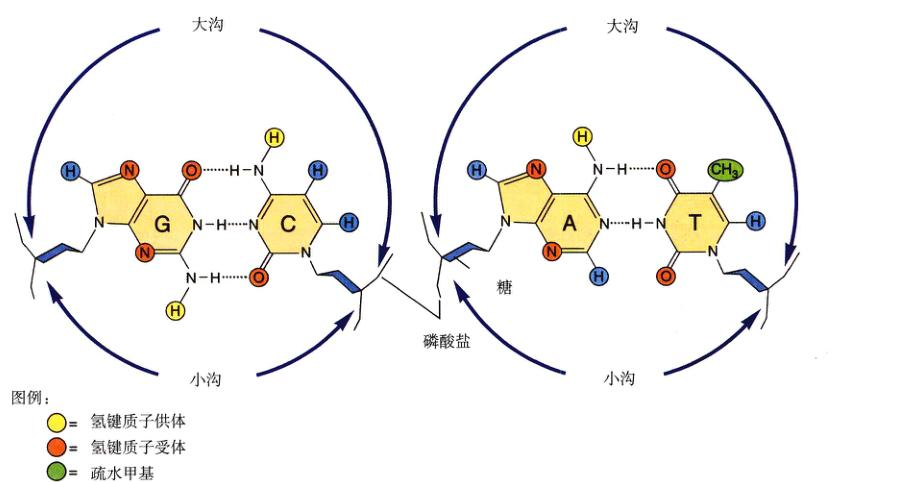
图 16.2 读取 DNA 的大沟 观察 DNA 螺旋的大沟，可以看到伸入沟内的碱基边缘。4 种可能的碱基对排列中的每一种（这里显示了两种）都提供一组独特的化学基团伸入沟内，在这张图中用不同颜色的球表示。调节蛋白可以通过这种特征信息来识别碱基对的排列。
Page 4 / 原始页码 302
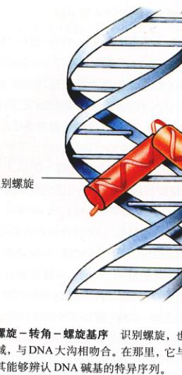
图 16.3 螺旋-转角-螺旋基序 识别螺旋，也就是基序的一个螺旋区域，与 DNA 大沟相吻合。在那里，它可以与碱基的边缘接触，使其能够辨认 DNA 碱基的特异序列。
2) 同源域基序
在众多的真核细胞生物体包括人体的发育过程中，有一类特殊的螺旋-转角-螺旋基序起到了重要作用。这些基序是在研究人员开始鉴定果蝇的一组同源异型突变（一组改变躯体装配方式的变异）时被发现的。他们发现，突变的基因编码调节蛋白，这些调节蛋白的正常功能是通过与发育开关基因结合来启动发育的关键环节。超过 50 种这类调节蛋白已经被分析，而它们全都含有一种几乎相同的 60 个氨基酸序列，叫做同源异型域 (homeodomain)（图 16.5b）。同源异型域的中心被一个结合 DNA 的螺旋-转角-螺旋基序占据。在发育同源结构域内围绕着这个基序的，是一个保证基序每次都能同样方式接触 DNA 的区域。
3) 锌指基序
另一类不同的 DNA 结合基序运用一个或几个锌原子来辅助其与 DNA 结合，这叫做锌指基序 (zinc fingers)（图 16.5c）。这些基序以几种形式存在。在一种形式中，一个锌原子把一个 α-螺旋片段与一个 β-折叠片段连接起来，使 α-螺旋片段与 DNA 大沟相吻合。这类基序通常成簇出现，β-折叠将螺旋片段间隔开使每个螺旋都能与大沟相接触。成簇聚集的锌指基序越多，蛋白质与 DNA 结合得越强。在另一形式的锌指基序中，β-折叠片的位置被另一个螺旋片段所取代。
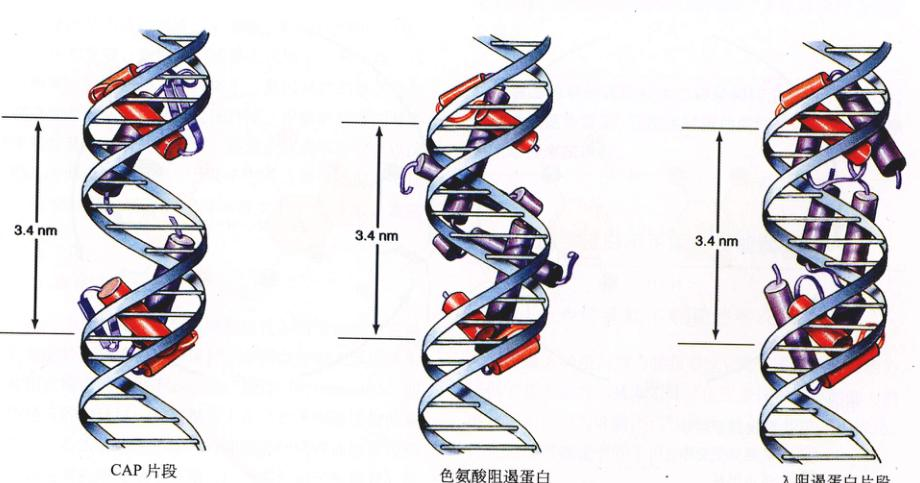
图 16.4 螺旋 - 转角 - 螺旋基序如何工作 图中显示的 3 个调节蛋白（紫色）全部通过一对螺旋 - 转角 - 螺旋基序与 DNA 结合。在这种情况下，2 个一样的基序（红色）相距 3.4 nm，正好是 DNA 螺旋转一圈的距离。这就使得调节蛋白能够嵌入 DNA 大沟两个相邻的部分之间，获得稳固的结合。
Page 5 / 原始页码 303
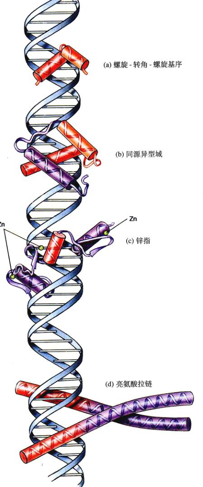
图 16.5 主要的 DNA 结合基序
(a) 螺旋 - 转角 - 螺旋基序
(b) 同源异型域
(c) 锌指
(d) 亮氨酸拉链
4) 亮氨酸拉链基序
还有一种 DNA 结合基序，两个不同的蛋白质亚基联合起来形成一个单独的 DNA 结合位点。这个基序形成在包含有若干疏水氨基酸（通常是亮氨酸）的一个亚基与另一个亚基上相似区域相互作用的区域。这种作用把这两个亚基在这个区域上结合起来，而两个亚基的其他部分是分离的，这叫做亮氨酸拉链基序 (leucine zipper)。这个结构具有“Y”的形状，Y 的两臂就是结合进 DNA 大沟中的螺旋片段（图 16.5d）。因为两个亚基可以为这个基序提供非常不同的螺旋部位，所以亮氨酸拉链在控制基因表达上容许了很大的灵活性。
16.3 细菌通过阻断 RNA 聚合酶活性来限制转录
16.3.1 调控转录起始
生物体是怎样运用 DNA 的调节序列以及与之相结合的蛋白质来控制转录的基因？在细菌和真核生物中使用了同样的基本调控，但真核细胞使用了反映出它们更为精巧的染色体结构的一些额外因子。我们将先从细菌内发现的相对较为简单的控制说起。
1) 阻遏蛋白是“关闭”开关
典型的细菌具有编码数千蛋白质的基因，但是一次只转录这些基因的一部分，其他的则不表达，直到需要它们的时候。比如说，当细胞遇到可能的食物来源时，它就会开始制造代谢这些食物所必需的酶。这一类转录控制的最熟悉的例子可能就是色氨酸合成基因 (trp 基因) 的调控了，斯坦福大学的 Charles Yanofsky 和他的学生们是这项研究的奠基人。
操纵子 (operon) 大肠杆菌 (Escherichia coli) 用由一簇 5 个基因编码的蛋白质来合成色氨酸。这 5 个基因一起作为一个单元被转录，这个单元叫做操纵子，产生出单个数千核苷酸的长片段 mRNA。
Page 6 / 原始页码 304
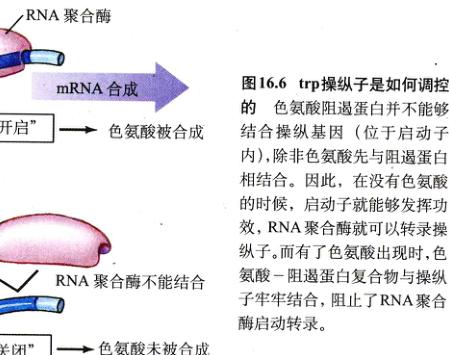
图 16.6 trp操纵子是如何调控的 色氨酸阻遏蛋白并不能够结合操纵基因（位于启动子内），除非色氨酸先与阻遏蛋白相结合。因此，在没有色氨酸的时候，启动子就能够发挥功效，RNA 聚合酶就可以转录操纵子。而有了色氨酸出现时，色氨酸 - 阻遏蛋白复合物与操纵基因结合，阻止了 RNA 聚合酶启动转录。
单个数千核苷酸的长片段 mRNA。RNA 聚合酶与一个位于第一个基因开端的启动子结合，然后顺 DNA 而下，一个接一个地转录基因。调节蛋白通过与启动子前面的操纵位点结合，通常是将启动子覆盖，从而关闭转录。
当色氨酸出现在细菌的周围环境当中时，细菌就通过一个色氨酸阻遏蛋白 (repressor) 停止了对 trp 基因的转录。这是一个螺旋-转角-螺旋调节蛋白，它与位于色氨酸启动子内的操纵位点相结合（图 16.6）。阻遏蛋白与操纵子的结合阻止了 RNA 聚合酶与启动结合。这种调控机制的功能关键在于，色氨酸阻遏蛋白不能够结合 DNA，除非它先结合两个分子的色氨酸。阻遏蛋白与色氨酸的结合使阻遏蛋白上的一对螺旋-转角-螺旋基序的方向发生了改变，使其识别螺旋与相邻的 DNA 大沟相吻合（图 16.7）。
这样，细菌细胞的色氨酸合成取决于周围环境中色氨酸的缺失。当环境中缺少色氨酸时，没有激活阻遏蛋白的物质，所以阻遏蛋白不能够阻碍 RNA 聚合酶与 trp 启动子的结合，trp 基因被转录，细胞开始由其他的分子来制造色氨酸。然后这些色氨酸与阻遏蛋白结合。这就是能够结合 trp 启动子。于是阻碍了 trp 基因的转录，细胞对色氨酸的合成也就中止了。
2) 激活蛋白是“开启”开关
不是所有的调节开关都是用来关闭基因的——有一些是用来打开它们的。在这些情况下，细菌的启动子被故意建造成 RNA 聚合酶的弱结合位点，于是这些启动子所控制的基因就很少被转录，除非有什么能够加强启动子结合 RNA 聚合酶的能力。这种情况就是在一个叫做转录激活因子 (transcriptional activator) 的调节蛋白与相邻 DNA 结合时。通过本身与聚合酶蛋白的接触，激活蛋白帮助把聚合酶与 DNA 启动子结合起来，使转录得以开始。
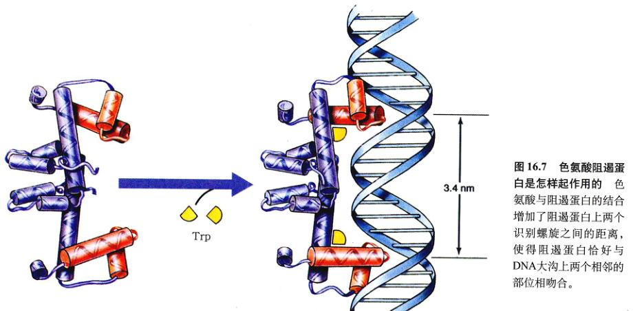
图 16.7 色氨酸阻遏蛋白是怎样起作用的 色氨酸与阻遏蛋白的结合增加了阻遏蛋白上两个识别螺旋之间的距离，使得阻遏蛋白恰好与 DNA 大沟上两个相邻的部位吻合。
Page 7 / 原始页码 305
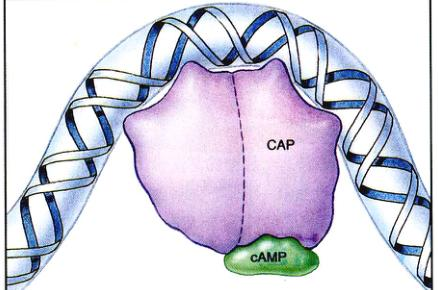
图 16.8 CAP 如何工作 分解代谢激活蛋白 (CAP) 与 DNA 的结合使 DNA 能够在它周围弯曲。这增强了 RNA 聚合酶的活性。
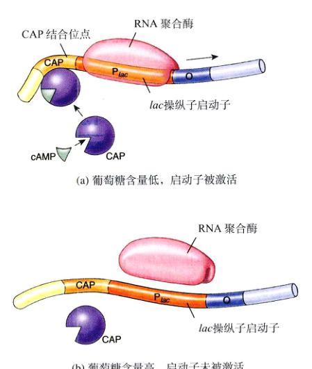
图 16.10 CAP 位点如何作用 CAP 分子只有在与 cAMP 结合的时候才能附着在 CAP 结合位点上。(a) 当葡萄糖水平很低时，cAMP 充足并结合 CAP。cAMP-CAP 复合体结合在 CAP 位点上，使 DNA 弯曲，导致 RNA 聚合酶接近启动子。(b) 当葡萄糖水平高时，cAMP 很少并且不能激活启动子。
一类被深入研究的转录激活蛋白就是大肠杆菌的分解代谢激活蛋白 (catabolite activator protein, CAP)，它启动转录的那种基因能够使 E. coli 在没有葡萄糖的情况下以别的分子为食物。葡萄糖含量的下降导致了细胞内一种结合 CAP 蛋白的信号分子——环磷酸腺苷 (cAMP) 水平的升高。当 cAMP 与 CAP 蛋白结合时，CAP 蛋白改变形状，使它的螺旋-转角-螺旋基序能够在某几个启动子中任意一个附近与 DNA 相结合。这些启动子便被激活而它们的基因也就能够被转录了（图 16.8）。
3) 开关的联合
通过“开启”和“关闭”转换器的联合，细菌能够制造出精致复杂的转录控制系统。一个研究深入的特殊例子就是大肠杆菌的乳糖操纵子 (lac operon)（图 16.9）。这种操纵子负责生成 3 种蛋白质，它们让细胞吸收乳糖（二糖）并将分解为两个单糖：葡萄糖和半乳糖。
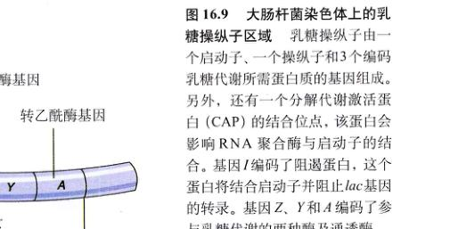
图 16.9 大肠杆菌染色体上的乳糖操纵子区域 乳糖操纵子由一个启动子、一个操纵子和 3 个编码乳糖代谢所需蛋白质的基因组成。另外，还有一个分解代谢激活蛋白 (CAP) 的结合位点，该蛋白会影响 RNA 聚合酶与启动子的结合。基因 I 编码了阻遏蛋白，这个蛋白将结合在启动子并阻止 lac 基因的转录。基因 Z、Y 和 A 编码了参与乳糖代谢的两种酶及通透酶。
Page 8 / 原始页码 306
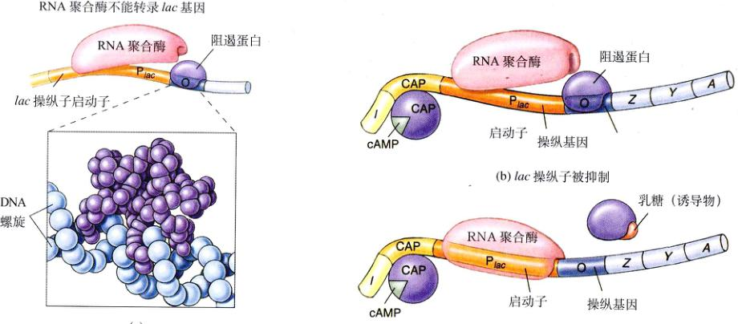
图 16.11 乳糖阻遏蛋白如何工作 (a) 乳糖阻遏蛋白。因为阻遏蛋白填进 DNA 螺旋的大沟，RNA 聚合酶就不能与启动子完全接触，转录就被阻止了。(b) 当阻遏蛋白结合操纵子位点的时候，乳糖操纵子就被关闭（阻遏）了。由于启动子和操纵子的位点重叠，RNA 聚合酶和阻遏蛋白不能够同时与之有效结合，就好像一把椅子上不能同时坐两个以上的人一样。(c) 当 CAP 结合并且乳糖结合会导致阻遏蛋白变构，使其不能够固定在操纵子位点而阻碍 RNA 聚合酶活性的时候，乳糖操纵子就被转录（诱导）了。
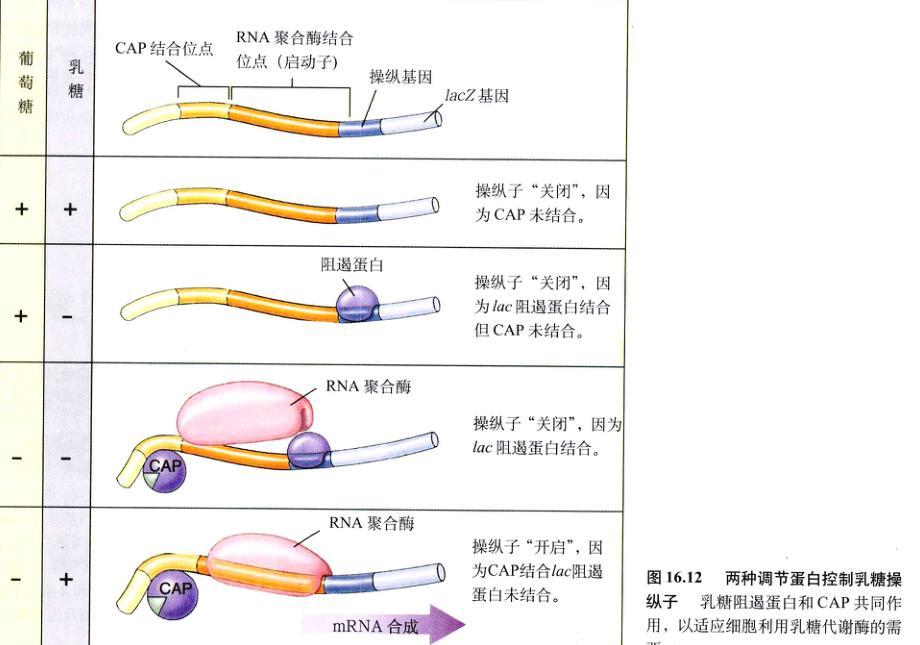
图 16.12 两种调节蛋白控制乳糖操纵子 乳糖阻遏蛋白和 CAP 共同作用，以适应细胞利用乳糖代谢酶的需要。
Page 9 / 原始页码 307
(1) 激活开关 (activator switch)。乳糖操纵子有一个调节位点，这是一个与乳糖启动子相邻的 CAP 位点，它保证在已经有充足葡萄糖的情况下乳糖基因不会被有效地转录。在缺乏葡萄糖的情况下，细胞内会积累高浓度的 cAMP，于是 cAMP 就可以和 CAP 结合并使之变构，结合 DNA，并且激活乳糖启动子（图 16.10）。在葡萄糖大量存在时，cAMP 水平较低，CAP 不能够结合 DNA，乳糖启动子也就不会被激活。
(2) 阻遏开关 (repressor switch)。在缺少葡萄糖的情况下乳糖基因是否实际被转录，取决于第二个调节位点——操纵基因 (operator)，它位置在与启动子相邻。一种叫做乳糖阻遏蛋白的蛋白质能够结合操纵基因，但只是在没有乳糖存在的情况下。因为操纵基因和启动子紧密结合，当阻遏蛋白结合操纵基因的时候会覆盖启动子的一部分，阻止了 RNA 聚合酶的接近于是也就阻止了乳糖基因的转录。这基因就叫做“阻遏基因”（图 16.11）。结果是，细胞不转录那些基因产物无用的基因。但是，当乳糖存在的时候，一种乳糖异构体结合阻遏蛋白，将它的结合基序转离 DNA 的大沟，这就阻止了阻遏蛋白与操纵基因结合，于是允许 RNA 聚合酶结合启动子并开始转录乳糖基因。乳糖操纵子的转录就叫做被乳糖“诱导”了。
这两种开关控制机制使得细胞在有乳糖的时候产生利用乳糖的蛋白质，在没有乳糖的时候就不产生。这使得细胞做出代谢判断来决定生产细胞所需的物质，节省了资源（图 16.12）。
16.4 真核细胞转录的调控是远程操作的
16.4.1 设计一种复杂的基因控制系统
正如我们所看到的，“开启”和“关闭”控制开关的联合使用使细菌能够对环境中的直接代谢需要做出反应，节省特定基因的转录。所有这些开关都通过直接与 RNA 聚合酶相互作用而发挥功效，或者阻遏或者增强 RNA 聚合酶与特定启动子的结合。真核细胞转录的复杂性有一定限度，因为只有少数开关能挤在一个启动子内部或者周围。在经历更复杂发育过程的真核细胞中，许多基因之间必须互相作用，因此也就比围绕单纯一个启动子需要更多的反应因子（表 16.1）。
在真核细胞中，克服这种物理上的限制是通过染色体上对基因转录执行控制的染色体位点远端位点来解决的（图 16.13）。用这种方法，许多分散在染色体上的调节序列能够影响某一个特定基因的转录。这种“远程控制”机制具有两个特点：一系列蛋白质辅助 RNA 聚合酶结合启动子；结合式的调节蛋白与远处的位点结合。这两个特点产生出了真正具有灵活性的调节系统。
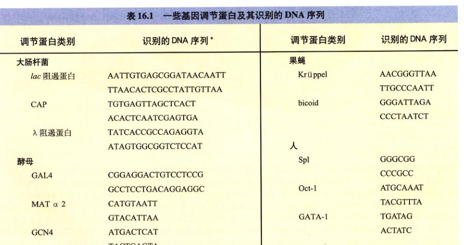
表 16.1 一些基因调节蛋白及其识别的 DNA 序列
Page 10 / 原始页码 308
1) 真核细胞的转录因子
要使 RNA 聚合酶能够成功地结合到真核细胞的启动子上并引发转录，一系列叫做转录因子 (transcription factor) 的蛋白质必须先组装到启动子上，形成一个指导并加固聚合酶结合的复合体（图 16.14）。装配过程开始于转录起始位点上游 25 个核苷酸处，在那儿由许多亚基组成的转录因子结合在短的 TATA 序列上（第 15 章讨论）。其他的转录因子随后结合，最终形成一个完整的转录因子复合体，它具有俘获 RNA 聚合酶的能力。在一般情况下，转录因子复合体随后将已经结合的聚合酶磷酸化，使它从复合体上脱离，好自由地开始转录工作。
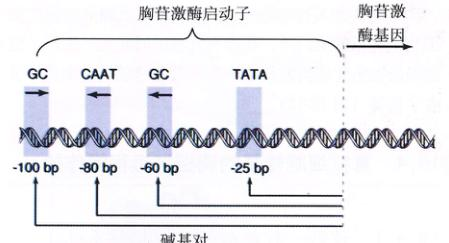
图 16.13 真核细胞启动子 这是一个编码胸苷激酶基因的启动子，它含有启动因子结合的 TATA 盒，以及另外 3 个用以指导结合转录复合体的其他因子的 DNA 序列。
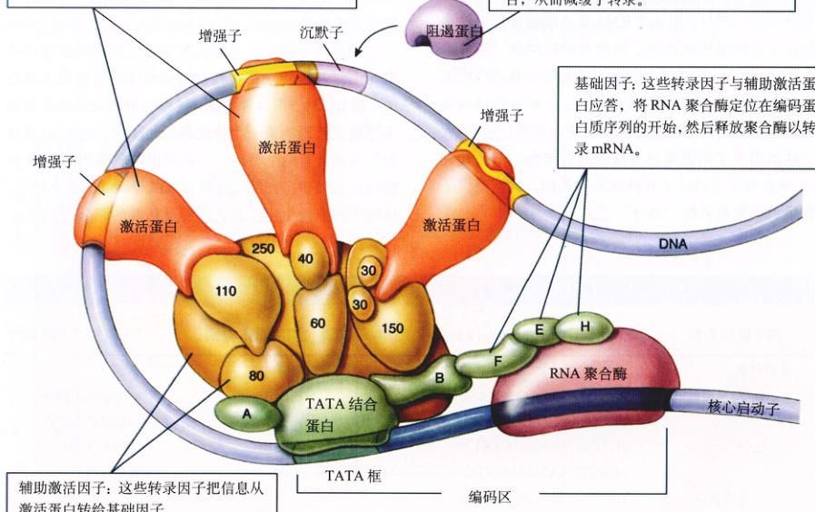
图 16.14 人转录复合物的结构 把 RNA 聚合酶定位在一个人类基因开始端的转录复合体由 4 种蛋白质组成。基础因子（复合体底部标有字母的绿色形状物）是转录过程所必需的转录因子，但是单靠它们自己并不能提高或降低转录速率。它们包括结合 TATA 的蛋白质，也就是基础因子上最先与增强子序列相结合的部分。辅助激活蛋白（转录复合体大体上由分子量定名的褐色部分）是连接基础因子与调节蛋白的转录因子，调节蛋白叫做激活蛋白（红色）。激活蛋白结合位于 DNA 其他部位的增强序列。单独的基础因子与特定激活蛋白之间的作用对于保持 RNA 聚合酶固定在合适的位置，以及由这些有效的激活蛋白所调控的转录速率来说都是必需的。当第二种叫做阻遏蛋白（紫色）结合到一个与增强序列相邻或部分重合的所谓“沉默子”序列时，本来应该结合增强子的激活蛋白就不能再与之结合。激活蛋白也就因此而不能与转录复合体作用而达到启动转录的目的。
Page 11 / 原始页码 309
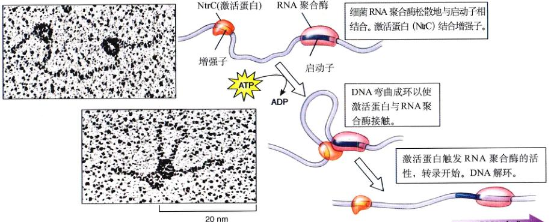
图 16.15 作用中的增强子 当细菌激活蛋白 NtrC 与一个增强子结合，就会引起 DNA 与远处一个结合了 RNA 聚合酶的位点成环，使转录激活。这种循环在细菌中很少见，但对于真核细胞来说却极为普遍。
复合体上脱离，好自由地开始转录工作。
若干不同转录因子的结合提供了许多可能的转录控制点，能够降低基础因子的有效性（比如，调节控制该因子表达及合成的启动子）或限制其装配成转录因子复合体容易程度的任何因素都将抑制转录。
2) 增强子
真核细胞基因转录在进化过程当中的一个重要进步就是由两个不同的模块，或者叫做功能域组成的调节蛋白的出现。DNA 结合域 (binding domain) 运用前面所讲过的结构基序将蛋白质结合在 DNA 的特定位点，而调节域 (regulatory domain) 与其他的调节蛋白相互作用。
这种模块化设计的最大优点之一就是把它调节与结合 DNA 相分离，允许调节蛋白与染色体某位点上的特定 DNA 序列相结合，并对或许相隔数千个核苷酸以外的另一个位点上的启动子执行调控。这些调节蛋白所结合的远距离位点叫做增强子 (enhancer)。虽然增强子存在于一些细菌的特例中（图 16.15），但是它们在真核细胞中则是惯例而不是特例。
调节蛋白在离启动子很远处的增强子位点与 DNA 结合的时候是如何影响启动子的？显然是 DNA 折叠成环以使增强子接近启动子，这就造成了增强子上的蛋白质调节域与启动子上的转录因子复合体直接接触（图 16.16）。
在真核细胞进化过程中得来的增强子方式的转录控制赋予了控制过程以极大的灵活性。远距离的调节位点允许了散落在整个 DNA 上的大量不同的调节序列共同作用于某个特定的基因。
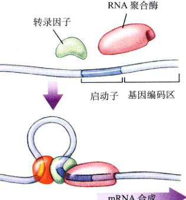
图 16.16 增强子怎样起作用 增强子位点位于距离被调控的基因很远处。激活蛋白（红色）与增强子的结合使得激活蛋白与 RNA 聚合酶所联接的转录因子（绿色）相互作用，激活了转录。
Page 12 / 原始页码 310
16.4.2 染色体结构在基因调节上的作用
DNA 包装成染色体的方式对于基因的表达能够产生意义深远的影响。正如我们在第 11 章中所看到的那样，真核细胞的 DNA 包装成非常压缩的形式才能装进细胞核中。DNA 紧紧缠绕在组蛋白周围形成核小体（图 16.17），然后核小体串连一步缠绕成 30 nm 的细丝。
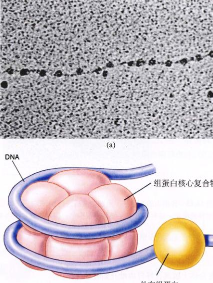
图 16.17 核小体 (a) 在电子显微镜下，每个核小体直径约 10nm。(b) 在核小体示意图中，DNA 双螺旋缠绕在一个由 8 个组蛋白组成的核心复合物周围，还有一个额外的组蛋白在核小体之外与 DNA 结合。
1) 核小体封闭了启动子
对真核细胞染色体的细致研究显示，位于启动子之上的组蛋白阻塞了转录因子复合体的装配。于是，转录因子就不能够结合在核小体内部的启动子。这样，核小体可能阻止了转录的持续开始。另一方面，核小体并不抑制激活蛋白和 RNA 聚合酶的酶。激活蛋白与增强子相接触的调节域能够阻碍了启动子的组蛋白移动。事实上，这种组蛋白的移位以及激活蛋白与启动子的结合正是装配转录因子复合体所必需的。转录一旦开始，RNA 聚合酶看起来就像是在经过核小体的时候将组蛋白推到了一边。
2) DNA 甲基化
DNA 化学上的甲基化 (methylation) 一度被认为是脊椎动物基因调节的中心环节。在胞嘧啶上加一个甲基就成了一个 5-甲基胞嘧啶，但这并不影响与鸟嘌呤形成碱基对（图 16.18），就像尿嘧啶加上一个甲基产生一个胸腺嘧啶而不影响与腺嘌呤生成碱基对一样。许多活性的哺乳动物基因都是低甲基化，这似乎支持了甲基化引起失活的结论。但是，现在对于甲基化的观点是它具有不那么直接的作用，防止“关闭”基因的偶然转录。脊椎动物细胞都具有一种蛋白质能够结合成簇的 5-甲基胞嘧啶，阻止转录激活蛋白接近 DNA。脊椎动物中的 DNA 甲基化看上去是保证了一旦基因被关闭，它就一直处于关闭状态。
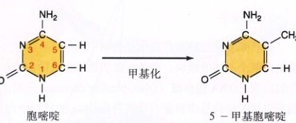
图 16.18 DNA 甲基化 胞嘧啶被甲基化，生成 5-甲基胞嘧啶。因为甲基位于一侧，它不会影响 GC 碱基对的氢键。
16.4.3 真核细胞的转录后调控
到目前为止，我们已经讨论了整个转录开始阶段的基因调节，也就是说，RNA 聚合酶何时以及间隔多久开始“读取”一个特定的基因。看起来大多数基因调节都始于这一阶段。但是，转录之后原则上还有许多调节基因表达的控制点，并且它们至少部是某些真核细胞的调控点。一般而言，调节蛋白或其他 RNA 分子识别 RNA 初级转录物上的特殊序列与这种转录后控制过程有关。
1) 初级转录物的加工
正如在第 15 章中学到的，大多数真核细胞的基因都有一生拼凑的结构，由若干小的编码序列（外显子）散落在一条长不编码的序列（内含子）当中而组成。由 RNA 聚合酶从一个基因转录来的最初 mRNA 分子，初级转录物，是整个基因的一个忠实的复制者，包括外显子和内含子。在初级转录物被翻译之前，占据了转录物平均 90% 的内含子通过一个叫做 RNA 加工或 RNA 剪接的过程被去除掉。
Page 13 / 原始页码 311
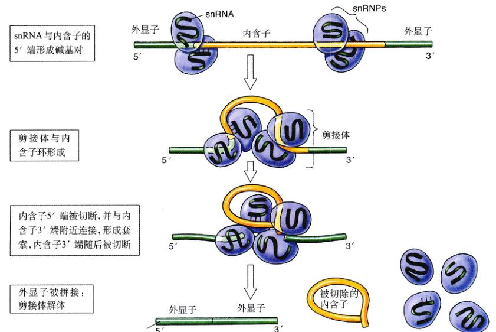
图 16.19 剪接体如何加工 RNA 一种叫做 snRNP 的微粒含有能与内含子 5' 端结合的 snRNA。几个 snRNP 聚集在一起形成剪接体。随着内含子形成环，5' 端被切开并连接到内含子临近 3' 端的一个位点。内含子形成一个套环并被切掉，外显子被剪接到一起。剪接体随后解体，并释放成熟的 mRNA。
一种叫做微小核糖核蛋白 (small nuclear ribonucleoprotein, 简称 snRNP) 的微粒被认为参与了 RNA 剪接 (RNA splicing)，这些位于细胞核内的微粒由蛋白质和一种特殊的称为核小分子 RNA (或 snRNA) 组成。有一种 snRNP 含有 snRNA 可以通过与互补序列形成碱基配对而结合到内含子的 5' 端。当多个 snRNP 联合起来形成一个更大的叫做剪接体 (spliceosome) 的复合体，内含子外翻成环并被剪切掉（图 16.19）。
RNA 剪接提供了一个基因表达可被调控的潜在环节，因为外显子通过不同的方式剪接，使得同一个基因可以装配出许多种不同的多肽。可变剪接在脊椎动物和昆虫中非常常见，通常一个基因产出两到三个不同的蛋白质。在许多情况下，基因表达正是通过在不同的发育阶段或不同组织当中改变剪接方式而得以调节。
在两个不同的人类器官——甲状腺和下丘脑当中，发现了可变剪接活动的完美实例。甲状腺（见第 56 章）负责产生控制诸如代谢速率等的激素。下丘脑位于脑中，收集来自身体各部分的信息（比如盐平衡）并相应释放激素，来调节由其他腺体释放的激素，比如垂体（见第 56 章）。这两个器官的功能之一是产生两种不同的激素：降钙素和降钙素基因相关肽 CGRP (calcitonin gene-related peptide)。降钙素负责控制我们从食物中吸收的钙量及牙齿和骨骼等组织当中的钙平衡，CGRP 关系到一系列神经及内分泌功能。虽然这两种激素具有不同的生理功能，但这两种激素是由相同的转录物产生的（图 16.20）。最终形成两种产物中的哪种，是由调节初级转录过程的组织特异性因子决定的，这便提供了另一种强有力的方式来调节基因产物的表达，从表达差异细微的蛋白质到表达完全不相干的蛋白质。
2) 加工过的转录物运出细胞核
加工过的 mRNA 转录物从第 5 章描述的核孔中运出细胞核。转录物通过核膜是一个主动的过程，转录物被连接在核孔内部的受体所辨认。转录物的特定部位，比如 poly-A 尾，可能在这种辨认中发挥作用。只要还有任何的剪接酶仍与转录物相连，转录物就不能够通过核孔，因此保证了尚未完成加工的转录物不会运输到细胞质中。
虽然是有可能的，但这还没有任何确凿的证据证明基因表达在这一环节上被调节。一般而言，大约 10% 的被转录基因是外显子序列，但是在所有产生的作为初级转录物的 mRNA 中只有约 5% 能够到达细胞质。这说明大约一半的半衰期的初级转录物没有离开细胞核，但是，目前人们还不清楚这种 mRNA 消失的现象是否具有选择性。
Page 14 / 原始页码 312

图 16.20 可变的剪接产物 由同一个基因而来的相同转录物可以以不同的方式剪接产生出两个非常不同的蛋白质产物——降钙素和 CGRP。
3) 选择哪个 mRNA 被翻译
在细胞质中，核糖体翻译加工过的 mRNA 转录物涉及一个称为翻译因子的蛋白质复合体。至少在某些情况下，基因表达是通过修饰一个或几个这种翻译因子来调节的。在其他情况下，翻译阻遏蛋白 (translation repressor) 通过与转录物的起始端结合使之不能够接触核糖体来关闭翻译过程。在人体里，铁蛋白（一种含铁的蛋白质）的产生是由一种叫做鸟头酸酶的翻译阻遏蛋白来关闭的。鸟头酸酶 (actonitase) 与铁蛋白 mRNA 起始端的一个 30 个核苷酸序列结合，形成一个稳固的环使核糖体不能结合。当细胞遇到铁的时候，铁与鸟头酸酶结合造成鸟头酸酶从铁蛋白 mRNA 上脱离下来，使 mRNA 被翻译并增加铁蛋白产量 100 倍。
基因表达相关词汇
散在长得多的不翻译的内含子序列中。
内含子 (intron)：真核细胞 DNA 片段，转录成 mRNA 但是在翻译之前被除支。
无意义密码子 (nonsense codon)：不能与 tRNA 的反密码子互补的密码子 (UAA, UAG, or UGA)，终止链密码子通常被称为“终止”密码子。
操纵基因 (operator)：基因的调控位点，是位于启动子附近或启动子之内的一段核苷酸序列，能够被阻遏蛋白识别。阻遏蛋白与操纵基因结合能阻止 RNA 聚合酶与启动子的功能性结合，于是转录过程被阻断。
操纵子 (operon)：一簇功能上相联系的基因，被转录为同一个 mRNA 分子，是原核细胞的一种常见的基因调控方式，真核细胞中少见，真菌除外。
启动子 (promoter)：基因上游 RNA 聚合酶结合并启动转录的位点。
阻遏蛋白 (repressor)：通过结合操纵基因来调节转录的一种蛋白质，阻止 RNA 聚合酶从启动子开始转录。
RNA 聚合酶 (RNA polymerase)：将 DNA 转录成 RNA 的酶。
转录 (transcription)：由 RNA 聚合酶催化合成与 DNA 互补的 RNA 分子的过程。
翻译 (translation)：在核糖体上，由 mRNA 指导氨基酸顺序合成多肽的过程。
活化子 (activator)：一种调节蛋白，通过与启动子上游的 DNA 序列结合来促进基因转录。活化子的结合激发了 RNA 聚合酶的活性。
反密码子 (anticodon)：位于 tRNA 分子一端的三核苷酸序列，与 mRNA 上编码氨基酸的密码子互补并形成碱基配对。
密码子 (condon)：遗传密码的基本单位，DNA 或 mRNA 上的 3 个相邻核苷酸序列，编码一个氨基酸或多肽链终止信号。
外显子 (exon)：真核细胞 DNA 片段，被转录成 mRNA 并被翻译成蛋白质。外显子通常分布在...
Page 15 / 原始页码 313
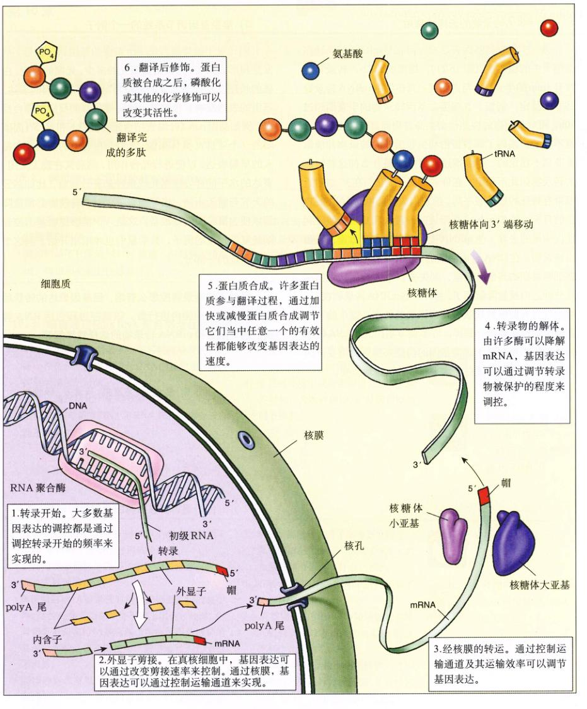
图 16.21 真核细胞中基因表达还可以在 6 个水平进行调控
1. 转录开始。大多数基因表达的调控都是通过调控转录开始的频率来实现的。
2. 外显子剪接。在真核细胞中，基因表达可以通过改变剪接速率来控制。通过核膜运送达还可以通过控制运输通道来实现。
3. 经核膜的转运。通过控制运输通道及其运输效率可以调节基因表达。
4. 转录物的解体。由许多酶可以降解 mRNA，基因表达可以通过调节转录物被保护的程度来调控。
5. 蛋白质合成。许多蛋白质参与翻译过程，通过加快或减慢蛋白合成调节它们当中任何一个的有效性都能够改变基因表达的速度。
6. 翻译后修饰。蛋白质被合成之后，磷酸化或其他化学修饰可以改变其活性。
Page 16 / 原始页码 314
4) mRNA 转录物的选择性降解
另一个影响到基因表达的方面就是 mRNA 转录物在细胞质中的稳定性（图 16.21）。细菌的 mRNA 转录物通常有 3min 的半衰期，与之不同，真核细胞 mRNA 转录物却非常稳定。例如，β 球蛋白基因转录物的半衰期超过 10h，相对于细胞的快速代谢生命过程而言，它几乎是永恒不变的。编码调节蛋白和生长因子的转录物却通常是非常不稳定的，半衰期还不到 1h。是什么使这些特殊的转录物如此不稳定？在许多情况下，它们在 3' 端附近都有特殊的核苷酸序列，使它们成为降解 mRNA 酶攻击的目标。3' 端 poly-A 尾附近的一段 A 和 U 核苷酸序列能促使尾的去除，使 mRNA 变得不稳定。比方说，组蛋白转录物，在 DNA 合成活跃的细胞中，半衰期约为 1h；在细胞周期的其他阶段里，则失去 poly-A 尾，转录物在几分钟之内就被降解掉了。另外一些 mRNA 转录物在 3' 端附近含有能够被核酸内切酶识别的位点，这个酶可以使转录物很快地被分解掉。许多调节基因的 mRNA 转录物短暂的半衰期对于这些基因的功能来说至关重要，因为这使细胞中调节蛋白的水平能够被快速地改变。
5) 复杂基因调节系统的一个例子
阳光对于植物而言是一个重要的基因调节信号，从发芽到形成果实。植物根据阳光的多少，光照的强度，白昼的长短以及很多其他的环境信号来调节基因的表达。基因表达反映了植物对上述环境信号的反应的综合反应，例如基因 cab（叶绿素结合光合蛋白）和 rbcS（固碳酶的一个亚基）。具体来说，光合作用相关的基因会在每天的早晨表达，以便进行光合作用，然后又在晚上关闭。表达的水平样要根据光线条件来进行调节，比如多云的天气与晴天不同。当黑暗来临时，转录物必须被降解以便为第二天做好准备。这是一个能够说明基因控制系统复杂程度的例子，科学家们也才刚刚开始了解这个复杂系统的一部分。
Page 17 / 原始页码 315
小 结
16.1 基因表达是通过调节转录过程来调控的
- 调节序列是短的 DNA 链，具有调节转录的功能，但其本身并不被转录。
- 调节蛋白识别并结合 DNA 上的特殊调节序列。
16.2 调节蛋白不用解旋就能读取 DNA
- 调节蛋白具有特定的结构基序，使它们能够紧密地嵌入 DNA 大沟，在大沟处，碱基对的侧面都被暴露出来。
- 常见的基序有螺旋-转角-螺旋、同源异型结构域、锌指和亮氨酸拉链基序。
16.3 细菌通过阻断 RNA 聚合酶活性来限制转录
- 许多基因都通过阻遏蛋白来实现转录调控，这是一种在启动子附近结合 DNA 的蛋白质，可以抑制该基因的转录。
- 也可以通过活化子来调节基因转录，这是一种结合 DNA 并激发 DNA 与 RNA 聚合酶结合于启动子的蛋白质。
16.4 真核细胞转录的调控是远程操作的
- 在真核细胞中，只有在转录因子家族的帮助下 RNA 聚合酶才能够结合到启动子上。
- 任何可以干预转录因子活性的物质都可以封闭或改变基因的表达。
- 真核细胞 DNA 被紧密地包装成染色体内的核小体。这种折叠看似在某种程度上阻碍了转录，但是调节蛋白和 RNA 聚合酶仍然能够激活特定的基因，即使这些基因被紧密地包装起来也不例外。
- 基因表达也可以在转录后的水平上进行调节，通过 RNA 剪接，翻译阻遏蛋白，以及选择性地降解 mRNA 的转录产物。
问 题
- 调节蛋白如何识别特定的核苷酸序列而不解旋 DNA？
- 什么是螺旋-转角-螺旋基序？同源异型结构域参与了什么样的调控作用？
- 描述当环境中含有色氨酸时大肠杆菌中 trp 基因转录的调节机制。
- 描述当环境中缺少葡萄糖但是有乳糖的时候，大肠杆菌中 lac 基因转录的调节机制。
- 真核细胞中转录因子如何激发转录？
- 在转录控制中，DNA 甲基化起到了什么样的作用？
- 真核细胞的初级 RNA 转录物与运输到细胞质中的该基因的 mRNA 转录物有什么区别？
- 当 mRNA 转录物由细胞核被运送到细胞质之中以后，真核细胞是怎样来调控 mRNA 转录物的翻译过程的？
媒体资源
- 探索：基因调节
- 探索：阅读 DNA
- 探索：基因调节
- 实践活动：乳糖操纵子
- 大肠杆菌乳糖操纵子的调节作用
- 大肠杆菌色氨酸操纵子调节作用
- 基因调节
- 技能测验：通过剪接体的 RNA 加工过程